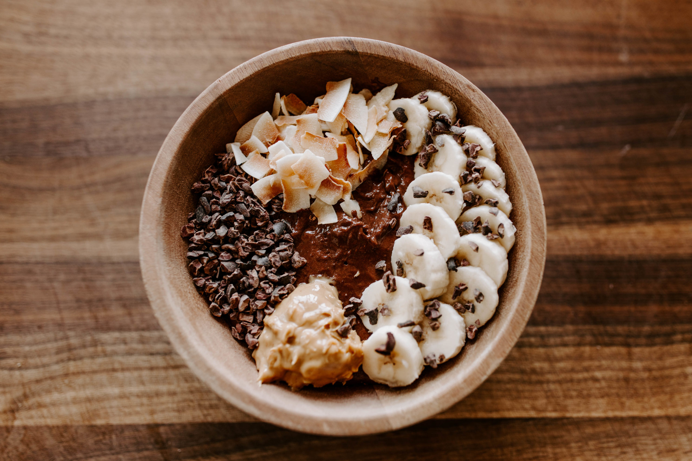

Somewhat Spicy Chili

Description
Sludge is basically thick protein pudding - just protein
powder & a few splashes of almond milk. Sometimes we'll have
it by itself, but our favorite way to enjoy sludge is by making
it into a power bowl, loaded with fruit, fiber, healthy fats &
tons of flavor. It's a great way to start your day or even
end it.
Ingredients
- 1 scoop of whey protein
- 1 TB of flax seeds
- 1 TB of honey
- 2 TB of coconut flakes
- milk or milk subsitute
- 1 banana
- 1 TB nut butter
Steps
- In a small/medium bowl, combine protein powder, ground
flax seed, and cacao. Slowly add almond milk until
it's a thick, pudding-like consistency.
(About 3-4 TB!)
- If you can, put sludge in fridge for 10-15 minutes.
- Once sludge is thick & fully combined, top with peanut
butter, honey, cacao nibs, coconut flakes & sliced banana.
Enjoy!